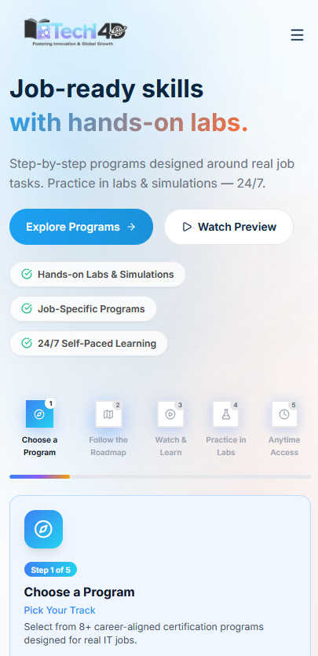
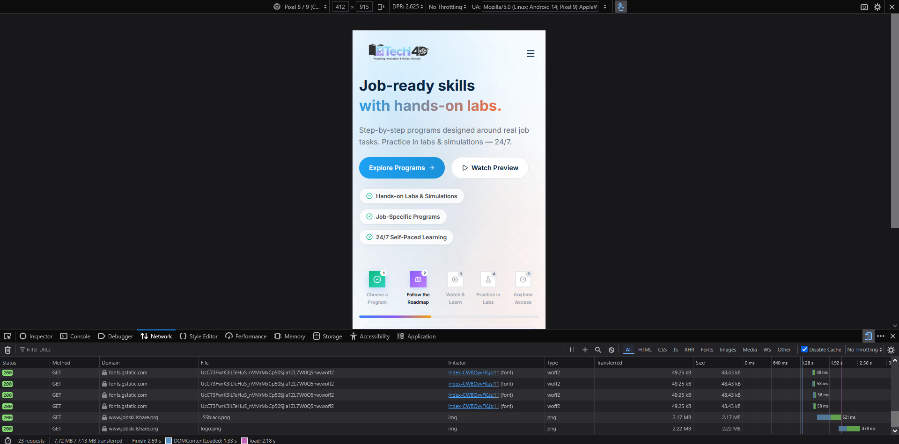
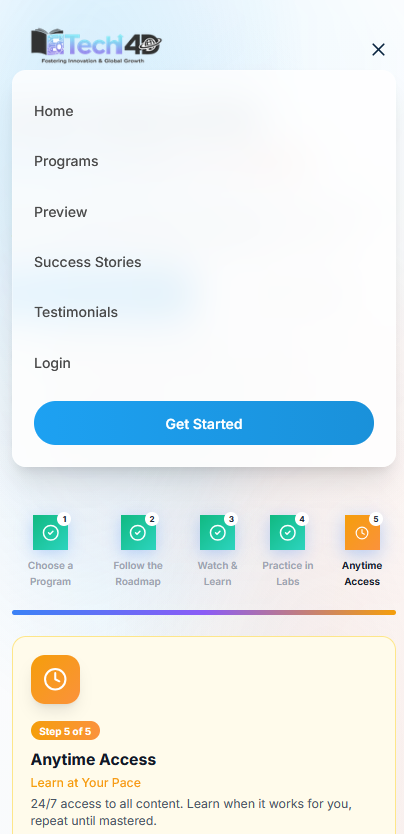
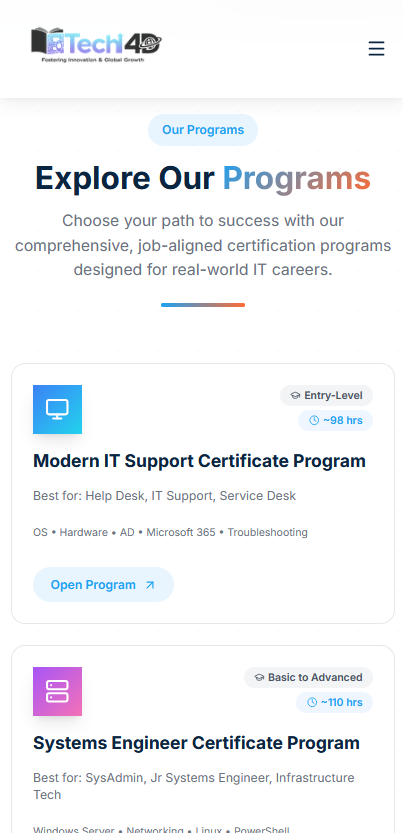
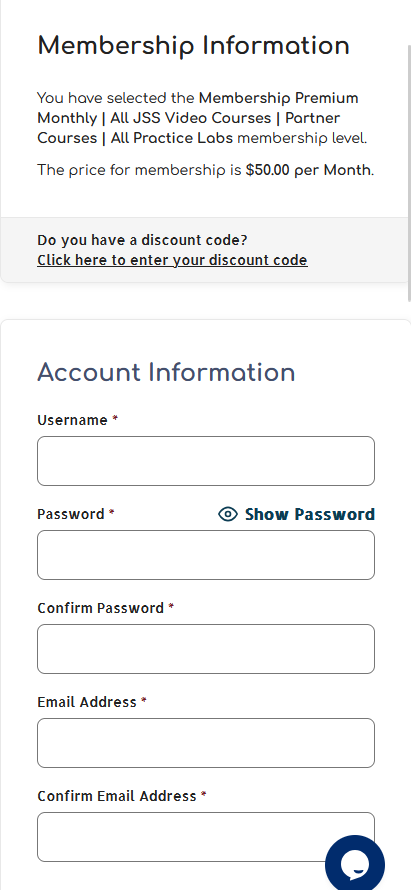

Main Focus
Mobile UX, homepage clarity, program discovery, registration flow, and trust signals.
Key Result
A single compiled Week 1 report with screenshots, findings, and recommendations.
Top Priority
Optimize large mobile image assets and reduce registration friction.
1. Weekly Task Summary
This report compiles the Week 1 internship tasks assigned for the Web Development and UI/UX track. The main focus was to review the JobSkillShare website, understand its structure, audit the user experience across key pages, and prepare a prioritized list of improvements that can support future prototype work.
Day
Assigned Task
Output Completed
Monday
Set up the development environment and review website structure, navigation, and visual hierarchy.
Development setup completed and website architecture mapped.
Tuesday
Conduct a UX audit of the homepage, including CTA placement, above-the-fold content, navigation clarity, mobile responsiveness, and load speed.
Homepage UX audit completed with screenshots and recommendations.
Wednesday
Audit program/course catalog pages for content completeness, orientation, program descriptions, enrollment flow, and visual layout.
Program and catalog page audit completed.
Thursday
Audit membership and registration pages, identify sign-up friction points, missing trust signals, and suggested changes.
Membership and registration audit completed.
Friday
Compile one top-priority list from the audits and prepare a single weekly report.
Top 10 priority list and final weekly report completed.
2. Development Environment Setup
The basic development and audit environment was prepared for Week 1 work.
VS Code was used for organizing notes and report files.
Browser DevTools were used for mobile viewport testing and performance review.
A GitHub repository was created for internship documentation.
Screenshots were collected for the main audit findings.
Markdown and PDF report formats were prepared for submission.
The website is structured around IT training programs, hands-on labs, membership access, previews, testimonials, and login/member entry points.
Homepage
|-- Hero section
| |-- Main value proposition
| |-- Primary CTA: Explore Programs
| |-- Secondary CTA: Watch Preview
|-- Training roadmap
| |-- Choose a Program
| |-- Follow the Roadmap
| |-- Watch and Learn
| |-- Practice in Labs
| |-- Anytime Access
|-- Program catalog
| |-- Modern IT Support Certificate Program
| |-- Systems Engineer Certificate Program
| |-- Cloud Engineer Certificate Program
| |-- Cybersecurity Analyst Certificate Program
| |-- AI Engineering and Automation Certificate Program
| |-- Freelancer Certificate Program
|-- Preview and learning sections
|-- Membership and registration flow
|-- Footer
|-- Program links
|-- Mission
|-- Membership
|-- Free Interview Prep
|-- Terms
|-- Social links
Initial Observations
The homepage communicates that JobSkillShare provides job-ready IT training with labs and simulations.
The mobile layout is responsive and the main buttons are visible above the fold.
The program catalog provides useful information such as target career paths, estimated hours, and program levels.
Some content sections are dense on mobile and would benefit from stronger scanning patterns.
The enrollment and membership flow can be clearer for users who arrive from a specific program page.
4. Tuesday Audit: Homepage UX
What Works Well
The homepage has a clear headline: job-ready skills with hands-on labs.
Primary and secondary CTAs are visible near the top of the mobile viewport.
The mobile menu is simple and easy to open.
The page uses a modern visual style with readable spacing and clear button contrast.
Issue 1: CTA Choice Could Better Match User Intent
Audit Area: CTA placement and above-the-fold content

Homepage hero in a mobile viewport.
Problem: The hero section includes "Explore Programs" and "Watch Preview", which are helpful actions. However, users who already know they want to join do not immediately see a direct membership or sign-up action above the fold.
Recommended Fix: Keep "Explore Programs" as the main CTA, but add a clear secondary path such as "Become a Member" or "Start Free" in the hero or mobile menu.
Issue 2: Hero Section Has Several Competing Elements on Mobile
Audit Area: 5-second clarity and visual hierarchy
Problem: The main message is understandable, but the hero also includes supporting text, two buttons, benefit chips, and the beginning of the roadmap section. On smaller mobile screens, this can make the first screen feel busy.
Recommended Fix: Prioritize the headline, one short supporting line, and the primary CTA. Move secondary proof points and roadmap details slightly lower so the first view is cleaner.
Issue 3: Large Image Assets Increase Mobile Payload
Audit Area: Load speed and performance

Network capture showing 23 requests and approximately 7.13 MB transferred.
Problem: The DevTools network capture showed 23 requests and approximately 7.13 MB transferred. The page loaded in about 2.18 seconds in the captured test, but large image assets increase the mobile data cost.
Recommended Fix: Compress large PNG/JPG files, serve WebP or AVIF formats where possible, and use responsive image sizes for mobile screens.
Issue 4: Mobile Navigation Is Simple but Could Support Faster Discovery
Audit Area: Navigation clarity

Mobile navigation menu with top-level links.
Problem: The mobile menu is clean, but "Programs" is only one general link. Users who are looking for a specific career path still need to navigate through the catalog after opening the menu.
Recommended Fix: Add a simple expandable "Programs" section or a direct anchor list for major career paths. This would improve discovery without making the menu crowded.
5. Wednesday Audit: Program and Course Catalog Pages
What Works Well
Program cards clearly show the program name, target audience, level, estimated hours, and key skills.
Individual program pages include useful technical context and explain the learning path.
The "Start Learning" action is visible on program pages.
Issue 1: Catalog Needs Faster Filtering on Mobile
Audit Area: Catalog layout and orientation

Program catalog displayed as stacked cards on mobile.
Problem: The catalog stacks program cards vertically on mobile. This is readable, but users may need to scroll through several cards before finding the right level or career path.
Recommended Fix: Add sticky horizontal filters such as "Entry-Level", "Basic to Advanced", "Advanced", "Cybersecurity", "Cloud", and "IT Support".
Issue 2: Program Descriptions Are Useful but Dense
Audit Area: Program description and visual layout
Cybersecurity program page with a dense description block.
Problem: The cybersecurity program page gives helpful details, but paragraph-style descriptions can become dense on mobile screens. Users scanning quickly may miss key points such as target role, prerequisites, hours, and outcomes.
Recommended Fix: Break long descriptions into compact sections such as "Best For", "Skills Covered", "Estimated Time", "Practice Labs", and "Outcome".
Issue 3: Enrollment Flow Should Preserve Program Context
Audit Area: Enrollment flow
Problem: When a user chooses a program and then moves toward membership or registration, the flow should keep reminding the user which program they selected. Without this context, the user may feel they were moved into a general membership process.
Recommended Fix: Carry the selected program name into the membership/registration screen. Example: "You selected Cybersecurity Analyst Certificate Program."
6. Thursday Audit: Membership and Registration Pages
What Works Well
The selected membership level and price are visible before account creation.
The form fields are clearly labeled.
A chat/help button is available, which can support users who are confused during sign-up.
Issue 1: Registration Form Has High Manual Input Effort
Audit Area: Sign-up friction

Membership sign-up form in a mobile viewport.
Problem: The mobile registration form asks for username, password, confirm password, email address, and confirm email address. This creates typing friction on mobile and increases the chance of input errors.
Recommended Fix: Reduce repeated fields where possible and add optional sign-up methods such as Google, LinkedIn, or GitHub. At minimum, use clear inline validation so users can fix errors immediately.
Issue 2: Discount Code Appears Before Account Creation
Audit Area: Registration flow clarity
Problem: The discount code prompt appears before the account information section. This may interrupt users who do not have a discount code and are simply trying to register.
Recommended Fix: Collapse the discount code field by default and place it closer to the payment step. This keeps the registration path focused.
Issue 3: Trust Signals Should Be Closer to Payment and Registration CTAs
Audit Area: Trust and confidence
Problem: The membership flow would benefit from clearer trust signals near the action area. Users may want reassurance about secure payment, refund/cancellation policy, support availability, and what access is included.
Recommended Fix: Add short trust microcopy near the membership and payment buttons, such as secure checkout, cancel anytime, support available, access to video courses and practice labs, and trusted member statistics.
7. Top 10 Priority Improvements
Priority
Area
Issue
Recommended Change
Impact
1
Performance
Mobile page transfers large image assets.
Compress images and use WebP/AVIF with responsive sizes.
High
2
Registration
Sign-up requires repeated manual fields.
Reduce duplicate fields and add optional social sign-in.
High
3
Enrollment
Program context can be lost during membership registration.
Carry selected program name into checkout/registration screens.
High
4
Homepage CTA
Ready-to-join users do not get a direct membership CTA above the fold.
Add "Become a Member" or "Start Free" path in hero/menu.
Medium-High
5
Catalog
Users must scroll through all programs on mobile.
Add filters by level, role, or category.
Medium-High
6
Trust
Trust signals are not close enough to payment decisions.
Add secure checkout, cancellation, support, and access details near CTAs.
Medium
7
Program Pages
Important details are buried in paragraph text.
Convert key details into bullets/cards for mobile scanning.
Medium
8
Navigation
Mobile menu has a general Programs link only.
Add expandable program shortcuts or anchor links.
Medium
9
Registration Flow
Discount code prompt interrupts the account form.
Collapse discount code by default and move it closer to payment.
Low-Medium
10
Accessibility
Some touch targets and links should be checked across mobile sizes.
Maintain at least 44-48px touch targets and strong focus states.
Low-Medium
8. Overall Conclusion
The JobSkillShare website already has a strong foundation: it explains the training focus, shows clear program options, includes mobile-friendly layouts, and provides direct actions for exploring courses. The main improvement opportunities are in reducing friction, improving mobile scanning, making enrollment context clearer, and optimizing performance for mobile visitors.
The most important changes to prioritize are image optimization, a smoother registration flow, clearer program-to-membership continuity, stronger trust signals near payment actions, and faster filtering within the program catalog.
Prepared for Week 1 internship reporting. Screenshots were captured from the JobSkillShare website using mobile viewport testing.